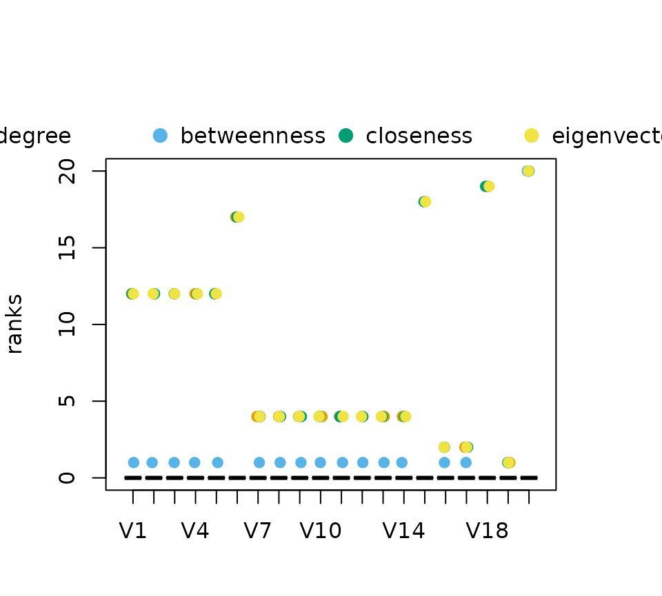

This vignette describes some methods to analyse partial rankings as obtained from neighborhood-inclusion or, more general, positional dominance. More on the topic of partial rankings can be found in the following literature.
Schoch, David. (2018). Centrality without Indices: Partial rankings and rank Probabilities in networks. Social Networks, 54, 50-60.(link)
Patil, G.P. & Taillie, C. (2004). Multiple Indicators, partially ordered sets, and linear extensions: Multi-criterion ranking and prioritization. Environmental and Ecological Statistics, 11, 199-228 (link)
Rank intervals
The function rank_intervals() is used to calculate the
maximal and minimal possible rank for each node in any ranking that is
in accordance with a given partial ranking.
data("dbces11")
g <- dbces11
#neighborhood inclusion
P <- g %>% neighborhood_inclusion(sparse = FALSE)
#without %>% operator:
# P <- neighborhood_inclusion(g, sparse = FALSE)
rank_intervals(P)## node:A rank interval: [1, 6]
## node:B rank interval: [1, 9]
## node:C rank interval: [2, 9]
## node:D rank interval: [2, 11]
## node:E rank interval: [3, 11]
## node:F rank interval: [2, 11]
## node:G rank interval: [2, 11]
## node:H rank interval: [2, 11]
## node:I rank interval: [1, 11]
## node:J rank interval: [1, 11]
## node:K rank interval: [3, 11]The package uses the convention, that higher numerical ranks
correspond to top ranked position. The lowest possible rank is thus 1.
The column mid_point should not be confused with the
expected rank of nodes, which is calculated with the function
exact_rank_prob(). See this vignette for more details.
Rank intervals are useful to assess the ambiguity of ranking nodes. The
bigger the intervals are, the more freedom exists, e.g. for centrality
indices, to rank nodes differently.
The intervals can be visualized with its own plot()
function. The function can take a data frame of centrality scores as an
additional parameter cent_scores. The ranks of each node
for each index are then plotted within each interval. Again, the higher
the numerical rank the higher ranked the node is according to the
index.
cent_scores <- data.frame(
degree=degree(g),
betweenness=round(betweenness(g),4),
closeness=round(closeness(g),4),
eigenvector=round(eigen_centrality(g)$vector,4))
rk_int <- rank_intervals(P)
plot(rk_int,cent_scores = cent_scores)
A small jitter effect is added to the points to reduce
over-plotting.
Note that you may encounter situations, where ranks of centralities may
fall outside of interval. This can happen in cases of ties in rankings,
especially for betweenness centrality. Betweenness is, so far, the only
index that does not strictly preserve neighborhood-inclusion.
That is, while \[
N(u)\subseteq N[v] \text{ and } N(v)\not\subseteq N[u] \implies
c(u)<c(v)
\] holds for most indices, betweenness fails to fulfill this
property.
The intervals reduce to single points for threshold graphs, since all nodes are
pairwise comparable by neighborhood-inclusion.
set.seed(123)
tg <- threshold_graph(20,0.2)
#neighborhood inclusion
P <- tg %>% neighborhood_inclusion(sparse = FALSE)
#without %>% operator:
# P <- neighborhood_inclusion(tg,sparse = FALSE)
plot(rank_intervals(P))The described betweenness inconsistancy is most evident for threshold graphs as shown in the rank intervals below.
cent_scores <- data.frame(
degree=degree(tg),
betweenness=round(betweenness(tg),4),
closeness=round(closeness(tg),4),
eigenvector=round(eigen_centrality(tg)$vector,4))
plot(rank_intervals(P),cent_scores = cent_scores)